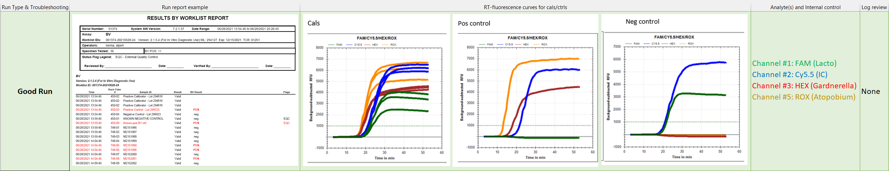
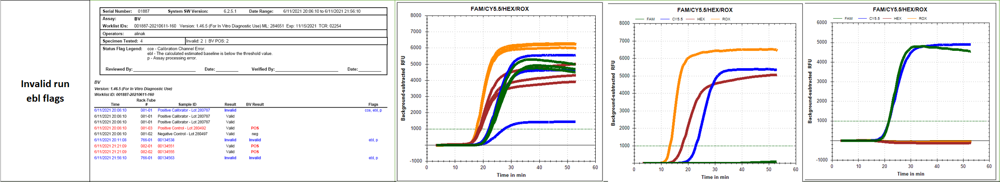
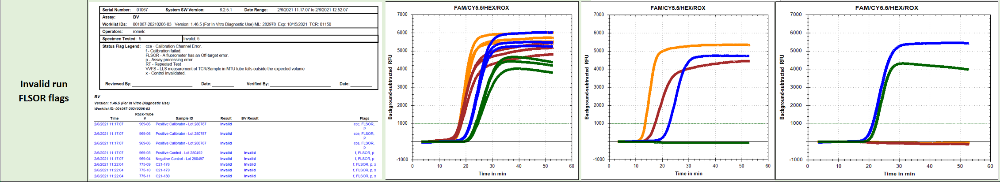
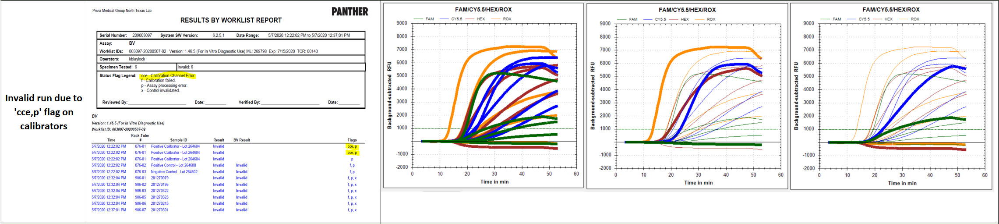

ABV
ABV contains assay troubleshooting data for these runs:
- Good Run
- Invalid Run ebl Flags
- Invalid Run FLSOR Flags
- Invalid Run Due to 'cce,p' Flag on Calibrators
Good Run

Invalid Run ebl Flags

Recommendations for Invalid run ebl flags:
Technical Support: dispatch FSE Field Service Engineer..
Field Service Engineer..
FSE instructions:
- Perform RTF measurements RTF2 range = 10-600. This can be done with and without MTU over the RTF.
- Remove Amp incubator’s shield underneath the incubator.
- Remove RTF 2. Check lens for debris. If there is debris, confirm what it is (i.e. glove, from incubator).
- Photograph debris, bag and send it back to us if possible.
- * Measure RTF. If there is no debris, shake it lightly and listen carefully for rattling. Replace if rattling sound.
- Important: Carefully remove the RTF from the instrument - from underneath - so that you do not dislodge any dirt or debris from RTF, and carefully inspect it.
- Make sure to follow all procedures from Panther Service Manual as applicable.
- Replace RTF if nothing apparent or issue continues after cleaning.
Invalid Run FLSOR Flags

Logs review for Invalid run FLSOR flags:
Message logs show several of the following errors on 2/6:
2/6/2021 21:43:57 Message 034.004.00165 RTF error (Signal out of range at the RTF 2)
2/6/2021 20:18:43 Message 034.004.00165 RTF error (Signal out of range at the RTF 2)
Output logs show that LED1 went > 600 on 2/6, and went back in range, but is still close to 600 (high 500rds).
RTF = RTF2 selectedChannel = 0 LED = 1 MessageID = 137769 Result=650
Recommendations for Invalid run FLSOR flags:
TS: FSE dispatch
FSE resolution: FSE Replaced RTF #2. Performed required calibrations and alignments. Verified proper.
Invalid Run Due to 'cce,p' Flag on Calibrators

Logs review for Invalid run due to 'cce,p' flag on calibrators:
Logs show:
WL0507-02 TCR00143 is a failed BV run due to cce flag on 2 calibrator replicates that invalidated the entire kit.
Output logs show:
2020-05-07 12:22:02,224|[TOS]|RuntimeType|DataReduction|Info|Normal|LogChannelResults, Channel FAM 11250, Reason: Calibrator replicate invalid: FAM does not meet the RFU range, TTime or emergence rate specification, RFURange: 1482.744, TTime: NaN, EmergenceRate: NotComputed
Same kit was then loaded with new cals/controls (WL0506-32) and failed again due to negative control failure.
Output logs show:
2020-05-07 00:40:53,927|[TOS]|RuntimeType|DataReduction|Info|Normal|LogTubeResults, 11220, Reason: Negative Control tube is invalid due to Lacto concentration is out of specified range.
Recommendations for Invalid run due to 'cce,p' flag on calibrators:
TS: Both runs show failure to amplify on FAM channel (lacto), likely a kit preparation issue. Will recommend customer to discard this kit, prepare a new one following P.I. instructions, and monitor the next run till PAS review.
PAS: Agree it appears to be reagent preparation issue. Recommend customer discard the kit (TCR# 00143). Ensure customer follows PI instructions and changes gloves at appropriate times
The first run failed due to both controls not meeting spec.
The second run failed due to calibrators not meeting spec.
 button at the top of the page to send feedback, comments, or change requests.
button at the top of the page to send feedback, comments, or change requests.